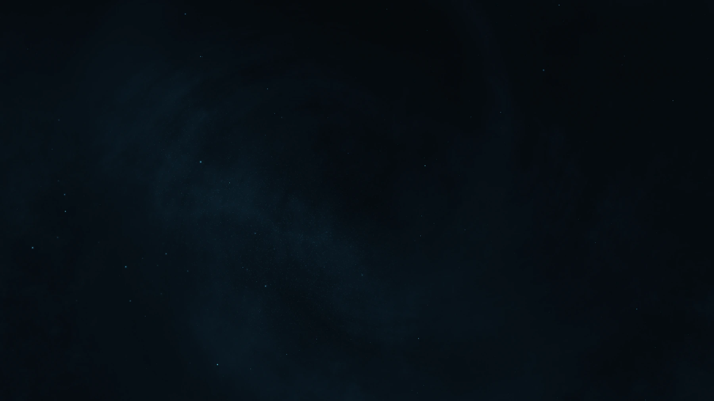
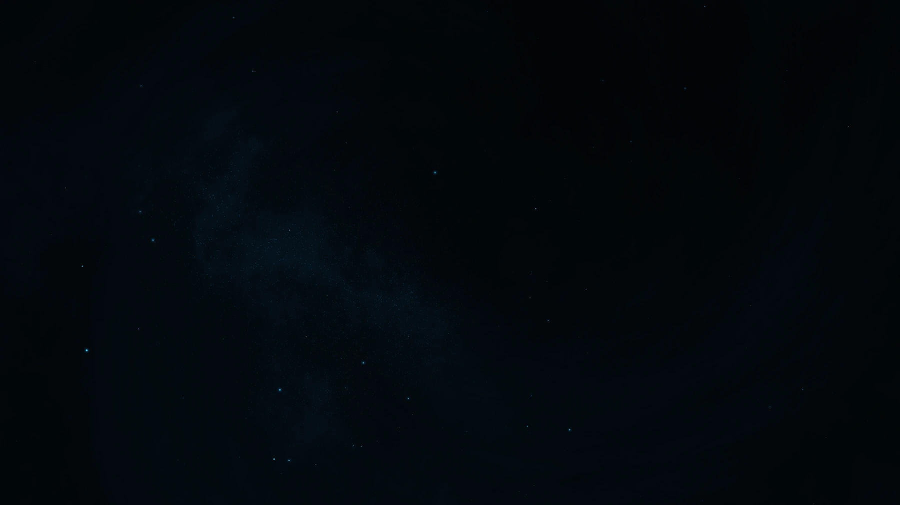
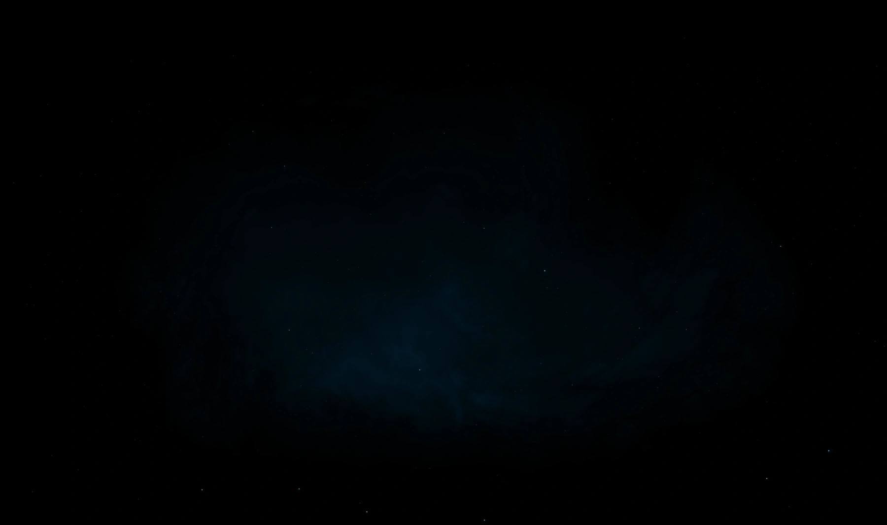

A slow, silent world for Petie’s office, made for three tall OLED screens. I led the creative direction, designed and animated it, and built the After Effects system that keeps it changing.
Petie wanted his office to feel like the inside of a ship: somewhere to work quietly, think clearly and step away from urgency. It would play for hours on three tall OLED screens, with ultrawide versions for his desk.
So it had to be easy to live with. That became the rule for everything after.
The rules
01Deep black, lots of empty space
02Distant, quiet structure
03Depth over particle count
04Motion slow enough to forget
05No visible start or end
06Silent
Petie’s way of putting itIdle is still water. Hyperspace is a smooth current.
02 — Process
From a test to a world.
Seven steps, and the call I made at each one.
Petie
The brief and the references. Reviews at the key moments.
Me
Creative direction, design, motion, the After Effects system and the guide.
Petie put his own involvement at about 3 or 4 out of 10: direction at the key points, freedom for me day to day.
01Test
Show the method first.
Before there was a project, I offered a test. I built it procedurally in After Effects, with no outside images and no plugins, and gave it a few controls: vibe, scale, density and randomness. It was rough on purpose. The point was to show how I’d work.
My call
Start with a system, not a single shot.
Petie
Saw enough in it to plan the full project.
02Direction
Give the black more room.
Petie’s review of the test: the rhythm and restraint were right, the clouds were too present. He wanted more black, fewer forms and more distance between them. I pulled the clouds back, opened the frame and made four styleframes. The difference between them is mostly density and negative space.
My call
A02 Darker, the one with the most room to breathe.
Petie
Picked the same one. It became the visual baseline.


A01 · First passA02 Darker · Chosen
03System
Build the system before the renders.
With the look agreed, I suggested putting more into the system itself: depth, control and a structure that lasts. I also changed the order of work. An early render could stop matching the final build, because a change in the code can reshuffle the randomness. So the system came first, and Primary Idle came after it.
My call
System first, renders after.
Petie
Agreed. His priority was a solid base to build on, not a long list of features.
Each star’s position, size and opacity come from a seed. Development view
04Weight
Light enough to live with.
Giving every star a real place in 3D space looked right, but it was heavy: lots of layers, slow previews after every seed change, costly blur, long renders. I kept looking for a lighter build that keeps the depth you actually see.
My call
Keep the depth you can see, cut the cost you can’t.
Petie
Preferred speed, clarity and long-term use over a little more physical accuracy.
Full render, in my tests
First build~7 h 30 min
Middle build~2 h 30 min
Final build40–50 min
Observations from production, on different machines, not a benchmark. Petie later rendered his full package in about 25 minutes.
05Hyperspace
Hyperspace, in its own voice.
My first entry ran 15 seconds. Petie found it a little long and added references for the jump. Then we gave each state a feeling, from calm focus in Idle to flow in the cruise: inspired by hyperspace, never a copy of it. We’d also agreed no stars would pass the camera. I tested a very controlled pass anyway, and flagged it as a test.
My call
A01’s density with B01’s motion.
Petie
Approved it, asked for about twice the speed with a slow turn in the tunnel, and liked where Entry and Exit were going.
EntryFive seconds into the tunnelReturnFive seconds back to Idle
06Refinement
Forward, not around.
Petie’s first review of Primary Idle: the project felt natural to use, but the motion seemed to circle instead of moving forward. I split Drift X and Drift Y, let Z lead, and swapped the atmosphere’s looping offset for evolution: more active in the cloud, calmer in the nebula.
My call
Turn a feeling into parameters.
Petie
It was the only major note he had.
BeforeDrift that circlesAfterZ leads, X and Y apart
The same 25 seconds, at normal speed. The change is quiet.
07Handover
Something easy to live with.
I sent the project and the guide before the big renders, so Petie could learn the system on his own machine. The guide gives every control a safe range, a sweet spot and a note on how it feels, plus workspace setup, render settings and how to export each screen format.
My call
Design the handoff, not just the file.
“Your guide was great and I felt right at home in the project.”
His last note: no more changes needed.
03 — System
A world you can keep changing.
The deliverable was an After Effects system as well as the films. One master seed reshapes the whole scene, and every part keeps its own controls.
Hero + micro stars
120 + 400
Loop-safe master
180 s
Master seed range
0–99,000
True black
#000000
One control center.
Every control group lives on its own layer in CTRL_CENTER. The world, QBS_UNIVERSE, reads from all of them, so Effect Controls is the whole interface.
Panel and Hyperspace
Scene switch
The world, 01 to 08
Every control, with a sweet spot.
Two pages from the guide. Each control comes with what it shapes, a safe range, a sweet spot and a note on how it feels.
Repeatable by design
Keep the part you liked.
Each local seed adds to the master. A global change can reshape the world, and an offset brings one favorite layer back.
True black underneath, and a safety controller that holds the black floor and caps brightness, glow and contrast. The guide asks for the final grade to be checked on the OLED itself.
Development view
Stars with an address.
Every star is its own layer with a place in 3D space: hero stars in blue, micro stars in teal. Near and far, size and opacity shape the field, and the parallax comes from that depth.
Development view
04 — Formats
One space. Room for every screen.
The master spans three tall 4K displays. Separate compositions handle a single portrait screen and two ultrawides, each with its own framing controls.

Stills from the delivered v01 idle exports.
05 — Delivery
Handed over, ready to change.
The renders, the editable system and a guide to using it. Petie later built his own web control layer around the project, for quick changes and RAM previews.